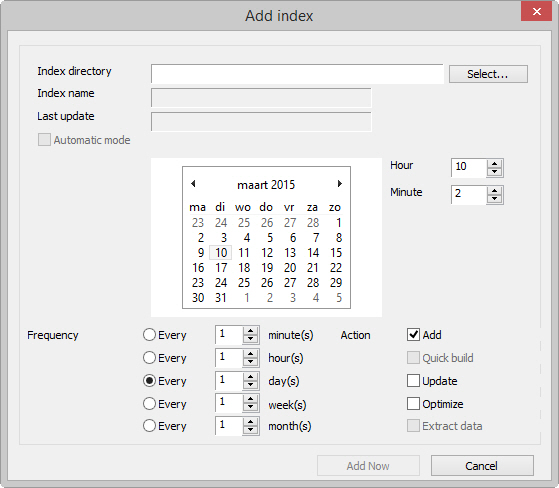

Scheduled indexing (manual)
Conditions
ZyINDEX is open. You want to build the index at specific intervals.
Instructions
- Click the TIMER icon: .
- Go to File > New.
The Add Index dialog appears.

- Click Select.
- Select an index.
- Click OK.
- Select a date.
- Specify the Hour.
If you process many documents per day, schedule the starting time after office hours. This saves you time and keeps processor usage at an acceptable level
- Specify the Minute.
- Determine the Frequency.
- Select an Action.
- Click Add Now.
The schedule of the index is added to the list. You can have different schedules (with different actions and frequencies) for the same index.
- Click the Start now button: .
The scheduled indexing process starts.
Stop TIMER or close ZyINDEX to end the process.
- After the process, check the values in the schedule. If a process wasn't completed successfully, it will be noticed by the value of the Last Update column.
Result
You have scheduled indexing. The index will be processed on the specified time and with the defined action(s).